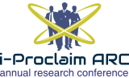

Journal articles
Peer-reviewed articles with stable publication and DOI or journal links.
Recognising authors whose verified scholarly outputs demonstrate quality, originality, responsible practice and meaningful contribution.

Applicants may submit a portfolio built around one or more verifiable outputs. The review considers the quality and significance of the work—not simply the number of items.
Peer-reviewed articles with stable publication and DOI or journal links.
Granted, registered or publicly documented innovation outputs.
Published proceedings, papers or other traceable conference contributions.
Documented scholarly, technical or creative contributions relevant to the discipline.
Provide links that allow the review team to confirm authorship, publication identity and the context of the achievement.
Completeness, identity and working links are checked.
Authorship and supporting records are cross-checked.
Independent reviewers consider quality, originality, integrity and contribution.
The outcome is communicated through WhatsApp; the panel decision is final.
Complete the guided application and see your readiness score while you work.